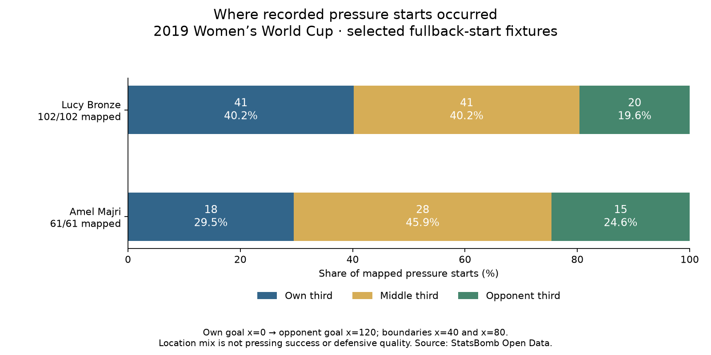

Football analyst training · Recruitment phase · Lesson 75
Where did she press?
Read: Soccermatics Lesson 3 — Statistical scouting → Context: what to measure.
We know how often players applied pressure. Now we add location. A pressure near your own goal and one near the opponent's goal happen in different football situations.
Divide the pitch into three equal sections
Own goal Opponent goal x=0 x=40 x=80 x=120 | Own third | Middle third | Opponent third |
The event team's coordinates already face towards x=120. We do not flip the second half. A start at x=40 enters the middle third; x=80 enters the opponent third. These are coordinate units, not metres.
The completed assignment
Own third Middle Opponent third Total Lucy Bronze 41 41 20 102 Amel Majri 18 28 15 61
We calculated the same breakdown for all 35 players. All original pressure counts and minutes stay unchanged. Each valid start enters one area; missing locations remain counted but unmapped.


Count and share answer different questions
Opponent-third share: Bronze: 20 ÷ 102 ×100 = 19.6% Majri: 15 ÷ 61 ×100 = 24.6%
Both statements can be true. This is the difference between an action count and its share of the player's activity. The denominator here is mapped pressures, not minutes or opponent passes. Both players have complete location coverage in this sample.
These locations do not prove successful pressing or a team's tactical plan. We have not measured how long each player spent in each area or the opportunities available there.
Practice: 12 of 40 pressures happened in the opponent third. What is the share?
12 ÷40 ×100 =30%. It means 30% of the mapped pressure starts were there. It does not mean 30% succeeded.
Run 75_fullback_pressure_areas.py in Spyder. Read the full report. This is our custom assisted extension of the course's context idea. Ask your teacher about any unclear step.